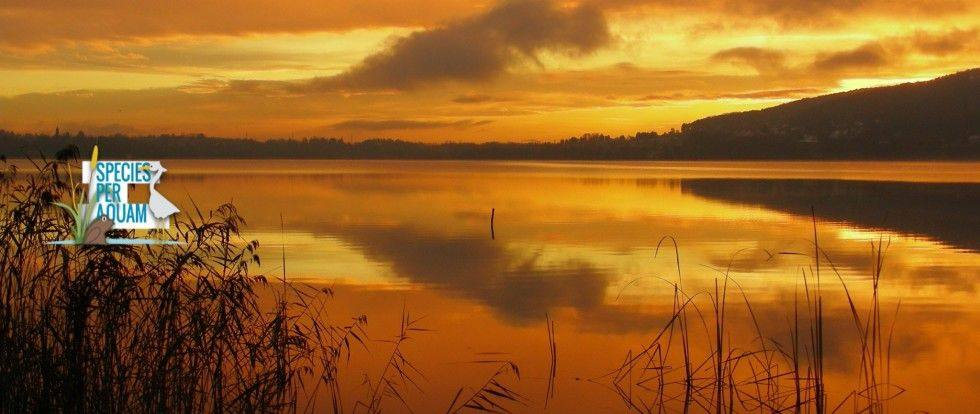

News ·
Species per aquam, il video realizzato da Marco Tessaro

È online il video “Species per aquam – La biodiveristà tra Valle del Ticino e Alpi” di Marco Tessaro, prodotto da Parco Lombardo della Valle del Ticino e Fondazione Lombardia Ambiente.
Il progetto “Species per aquam” che ha come capofila il Parco Lombardo della Valle del Ticino e come partner Fondazione Lombardia per l’Ambiente – FLA, mira a potenziare la Rete Ecologica Regionale attraverso il rafforzamento a scala locale della matrice ambientale di aree dove la permeabilità della rete e la funzione ecologica di aree sorgente di particolare rilevanza sono limitate da alcuni fattori ambientali di origine antropogenica ben individuati e definiti.
In sintesi, il progetto si propone i seguenti tre obiettivi specifici definiti sulla base dell’analisi del contesto, del problema ambientale e delle minacce che ne sono all’origine:
- aumento della permeabilità della matrice ambientale a scala locale nell’intorno del Lago di Comabbio, a favore dell’avifauna di interesse conservazionistico di grandi dimensioni nidificante, migratrice e svernante;
- potenziamento della funzione di area sorgente svolta dal Lago di Comabbio per le specie ornitiche acquatiche di interesse conservazionistico nidificanti, migratrici e svernanti nella fascia ripariale a formazioni di macrofite emergenti di grande taglia;
- miglioramento della la rete ecologica nell’area delle Paludi di Arsago, al fine di connettere i nuclei isolati e incrementare lo scambio genetico della più importante meta-popolazione italiana di Pelobate fosco, migliorando lo stato conservazionistico della specie target e delle altre specie di anfibi presenti; tale obiettivo favorirà anche le specie ornitiche presenti.
Insieme a questi tre obiettivi, sarà perseguita una quarta finalità: l’informazione e la sensibilizzazione della popolazione locale e dei fruitori, sempre necessarie laddove si miri a incrementare la consapevolezza e a realizzare un cambiamento.
Nell’ambito di questo progetto, GRAIA è impegnata nel controllo delle specie esotiche invasive (contenimento del siluro) e nella progettazione e direzione lavori degli interventi di riqualificazione nell’area delle Paludi di Arsago.
Species per aquam from Marco Tessaro on Vimeo.